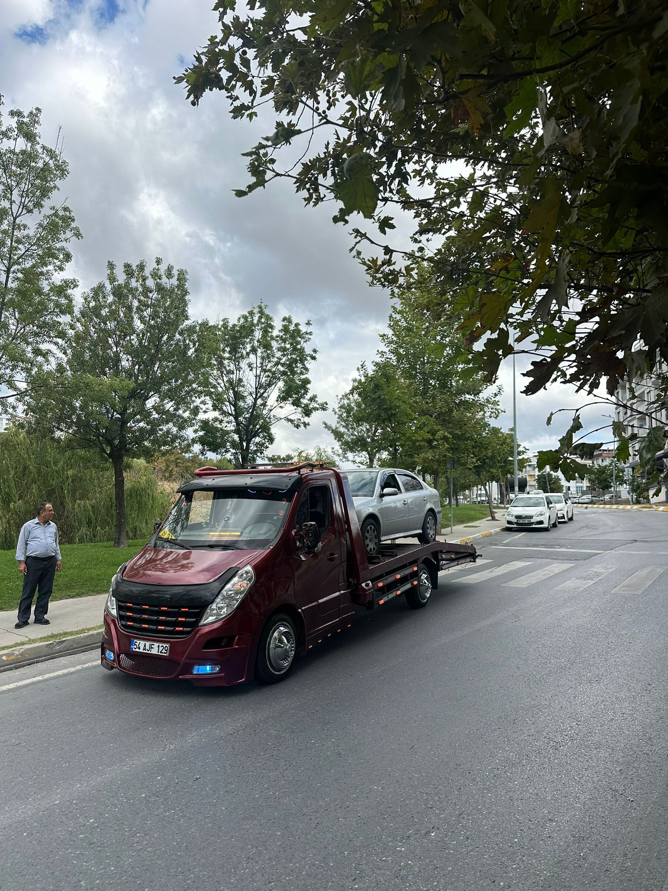
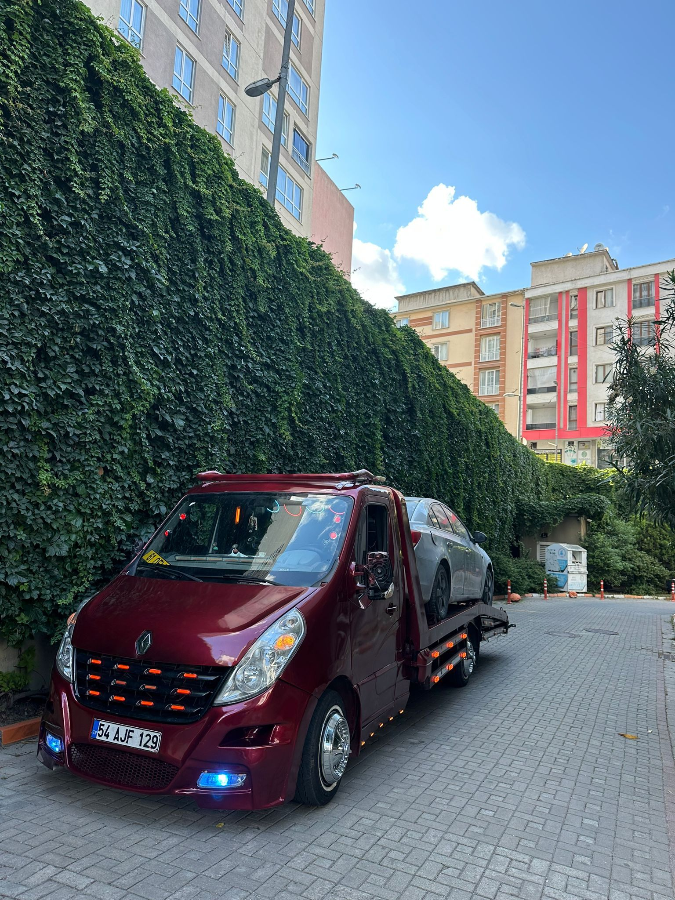

Oto Kurtarma
Arızalı veya hasarlı aracınızı güvenle istediğiniz noktaya taşıyoruz.

Esenyurt, Avcılar, Bahçeşehir ve Beylikdüzü başta olmak üzere İstanbul’un her noktasına güvenli oto kurtarma ve yol yardım.
İstanbul’un iki yakasında kesintisiz hizmet
Aracınız nerede kalırsa kalsın, uygun ekipman ve dikkatli taşıma ile bulunduğunuz noktadan teslim adresine kadar yanınızdayız.
Arızalı veya hasarlı aracınızı güvenle istediğiniz noktaya taşıyoruz.
Otomobil, SUV ve hafif ticari araçlar için profesyonel taşıma.
Yolda kalan aracınıza yerinde akü desteği ve güvenli çalıştırma.
Yakıtınız bittiğinde bulunduğunuz konuma hızlı yol yardım desteği.
Lastik ve küçük arıza durumlarında çözüm odaklı yol yardımı.
İstanbul içi ve şehirler arası planlı araç taşıma hizmeti.

Merkez bölgelerimizden İstanbul’un tamamına, Avrupa Yakası’ndan Anadolu Yakası’na ve şehirler arası noktalara hizmet veriyoruz.
Gerçek hizmetlerimizden seçilmiş görüntüler.
Aramak veya WhatsApp’tan konum göndermek için bir kişi seçin.